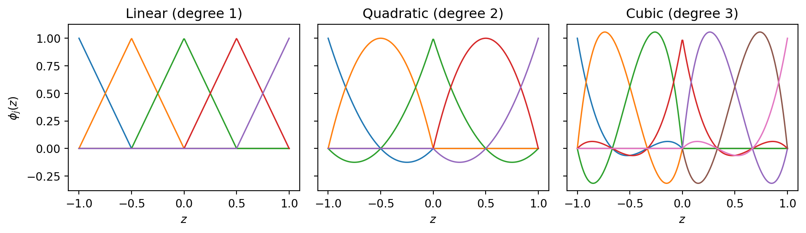
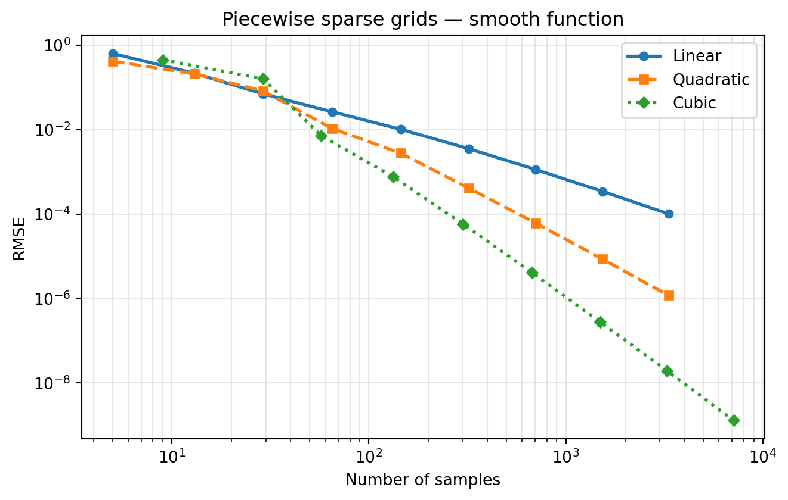
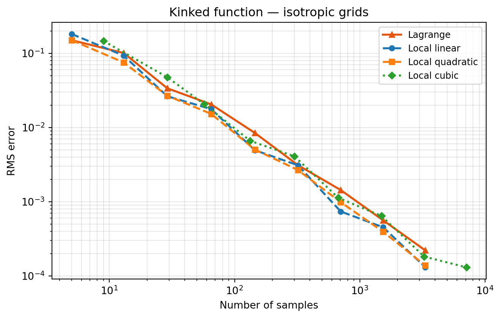
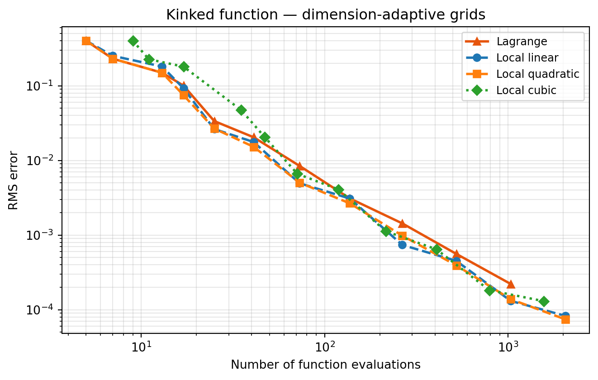
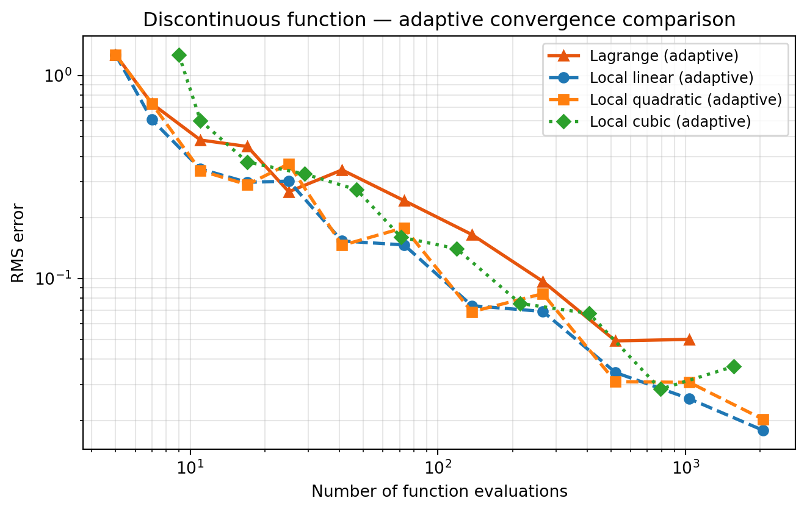
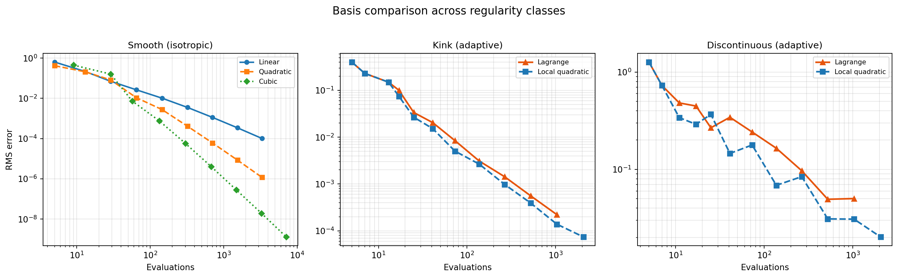

import numpy as np
import matplotlib.pyplot as plt
from pyapprox.util.backends.numpy import NumpyBkd
from pyapprox.surrogates.sparsegrids import (
IsotropicSparseGridFitter,
SingleFidelityAdaptiveSparseGridFitter,
TensorProductSubspaceFactory,
)
from pyapprox.surrogates.sparsegrids.basis_factory import (
ClenshawCurtisLagrangeFactory,
PiecewiseFactory,
)
from pyapprox.surrogates.affine.indices import (
ClenshawCurtisGrowthRule,
CubicNestedGrowthRule,
MaxLevelCriteria,
)
from pyapprox.probability.univariate.uniform import UniformMarginal
bkd = NumpyBkd()
np.random.seed(42)
marginal = UniformMarginal(-1.0, 1.0, bkd)
# Shared test sets
rng = np.random.default_rng(0)
test_samples = bkd.asarray(rng.uniform(-1, 1, (2, 4000)))Local Basis Sparse Grids: Piecewise Polynomial Interpolation
PyApprox Tutorial Library
Build sparse grid surrogates using piecewise linear, quadratic, and cubic bases. Compare adaptive local vs. global Lagrange convergence on smooth, kinked, and discontinuous functions.
TipDownload Notebook
Prerequisites
Complete Isotropic Sparse Grids and Adaptive Sparse Grids first. This tutorial builds on the Smolyak combination technique and the step_samples() / step_values() adaptive API, showing how to replace the global Lagrange basis with local piecewise polynomials.
Why Local Bases?
The isotropic and adaptive sparse grid tutorials used global Lagrange polynomials on Clenshaw–Curtis nodes. Global polynomials converge exponentially fast for smooth functions, but they can oscillate wildly when the function has kinks, steep gradients, or jump discontinuities.
Piecewise (local) polynomial bases partition the domain into elements and fit a low-degree polynomial on each one. The convergence rate is algebraic — \(O(h^{p+1})\) for degree-\(p\) piecewise polynomials in smooth regions — but the approximation is stable for any continuous function and can be localised to the neighbourhood of a non-smooth feature.
ImportantWhat PyApprox’s adaptive algorithm does — and does not — do
PyApprox supports dimension adaptivity: the greedy algorithm selects which dimension to refine next based on error indicators, but within each dimension the grid is uniform at the chosen level. It does not perform spatial (local) adaptivity — it cannot place extra points near a kink at \(z_1 = -0.3\) while leaving the rest of the \(z_1\) axis coarse.
This means dimension adaptivity helps the same way for both Lagrange and local bases: it identifies that \(z_1\) matters more than \(z_2\) and allocates more levels there. The advantage of local bases is entirely due to stability — a piecewise polynomial at a given level converges steadily even when a kink is present, whereas a Lagrange polynomial at the same level develops oscillations that prevent convergence.
PyApprox supports three piecewise basis types:
| Basis | Degree | Convergence (smooth) | Growth rule |
|---|---|---|---|
piecewise_linear |
1 | \(O(h^2)\) | ClenshawCurtisGrowthRule |
piecewise_quadratic |
2 | \(O(h^3)\) | ClenshawCurtisGrowthRule |
piecewise_cubic |
3 | \(O(h^4)\) | CubicNestedGrowthRule |
Setup
1-D Piecewise Bases
Before building sparse grids, visualise what each piecewise basis looks like.
from pyapprox.surrogates.affine.univariate.piecewisepoly import (
PiecewiseLinear,
PiecewiseQuadratic,
PiecewiseCubic,
)
xx = np.linspace(-1, 1, 300)
fig, axes = plt.subplots(1, 3, figsize=(10, 3), sharey=True)
nodes_lin = bkd.asarray(np.linspace(-1, 1, 5))
basis_lin = PiecewiseLinear(nodes_lin, bkd)
vals_lin = bkd.to_numpy(basis_lin(bkd.asarray(xx)))
for j in range(vals_lin.shape[1]):
axes[0].plot(xx, vals_lin[:, j], lw=1.2)
axes[0].set_title("Linear (degree 1)")
axes[0].set_xlabel("$z$")
axes[0].set_ylabel("$\\phi_j(z)$")
nodes_quad = bkd.asarray(np.linspace(-1, 1, 5))
basis_quad = PiecewiseQuadratic(nodes_quad, bkd)
vals_quad = bkd.to_numpy(basis_quad(bkd.asarray(xx)))
for j in range(vals_quad.shape[1]):
axes[1].plot(xx, vals_quad[:, j], lw=1.2)
axes[1].set_title("Quadratic (degree 2)")
axes[1].set_xlabel("$z$")
nodes_cub = bkd.asarray(np.linspace(-1, 1, 7))
basis_cub = PiecewiseCubic(nodes_cub, bkd)
vals_cub = bkd.to_numpy(basis_cub(bkd.asarray(xx)))
for j in range(vals_cub.shape[1]):
axes[2].plot(xx, vals_cub[:, j], lw=1.2)
axes[2].set_title("Cubic (degree 3)")
axes[2].set_xlabel("$z$")
fig.tight_layout()
plt.show()
Benchmark Functions
We use three 2D functions covering distinct regularity classes.
def smooth_fn(samples):
"""cos(pi*z1) * cos(pi*z2/2) — infinitely smooth."""
z1, z2 = samples[0], samples[1]
return bkd.reshape(bkd.cos(np.pi * z1) * bkd.cos(np.pi * z2 / 2), (1, -1))
def kink_fn(samples):
"""
|z1 + 0.3|^0.7 + 0.3*z2
Holder-continuous at z1 = -0.3 (not C^1).
The exponent 0.7 < 1 makes the kink sharper than a simple absolute
value, so Lagrange oscillations are more prominent and the separation
between methods is clearly visible on convergence plots.
The kink location -0.3 is not on any dyadic or Clenshaw-Curtis node.
"""
z1, z2 = samples[0], samples[1]
vals = bkd.abs(z1 + 0.3) ** 0.7 + 0.3 * z2
return bkd.reshape(vals, (1, -1))
def disc_fn(samples):
"""
sign(z1 - 0.2) + 0.3*z2
Axis-aligned jump discontinuity at z1 = 0.2. The jump is parallel
to the z2 axis, so a single column of piecewise elements straddles
the jump at each level — all other elements are exact.
Lagrange develops Gibbs oscillations that do not decay;
local bases confine the error to the straddling column.
"""
z1, z2 = samples[0], samples[1]
vals = bkd.sign(z1 - 0.2) + 0.3 * z2
return bkd.reshape(vals, (1, -1))
Note
The kink exponent 0.7 (Hölder-\(0.7\) continuity) is chosen because it produces a clearly visible separation between Lagrange and local bases at moderate sample counts. A plain \(|\cdot|\) kink (Lipschitz) would require far more levels to see the asymptotic difference, making the comparison less compelling.
Experiment 1: Smooth Function — Isotropic Grids
For smooth functions, the basis degree determines the algebraic convergence rate. We use isotropic grids here because the comparison is between degree, not between adaptive strategies.
exact_smooth = bkd.to_numpy(smooth_fn(test_samples))[0]
basis_configs = [
("Linear", "linear", ClenshawCurtisGrowthRule(), "o-"),
("Quadratic", "quadratic", ClenshawCurtisGrowthRule(), "s--"),
("Cubic", "cubic", CubicNestedGrowthRule(), "D:"),
]
fig, ax = plt.subplots(figsize=(7, 4.5))
for label, poly_type, growth, style in basis_configs:
npts_list, rmse_list = [], []
for lev in range(1, 10):
facs = [PiecewiseFactory(marginal, bkd, poly_type=poly_type)
for _ in range(2)]
tp = TensorProductSubspaceFactory(bkd, facs, growth)
fitter = IsotropicSparseGridFitter(bkd, tp, level=lev)
samps = fitter.get_samples()
vals = smooth_fn(samps)
result = fitter.fit(vals)
approx = bkd.to_numpy(result.surrogate(test_samples))[0]
rmse = np.sqrt(np.mean((exact_smooth - approx) ** 2))
npts_list.append(samps.shape[1])
rmse_list.append(rmse)
ax.loglog(npts_list, rmse_list, style, label=label, markersize=5, lw=2)
ax.set_xlabel("Number of samples")
ax.set_ylabel("RMSE")
ax.set_title("Piecewise sparse grids — smooth function")
ax.legend()
ax.grid(True, which="both", alpha=0.3)
fig.tight_layout()
plt.show()
Higher-degree piecewise polynomials converge faster on smooth functions. This is the algebraic rate; in the Adaptive Sparse Grids tutorial, Lagrange (Clenshaw–Curtis) converges exponentially on the same function. The trade-off is that Lagrange cannot handle non-smooth functions safely.
Experiment 2: Kinked Function
A kink (Hölder-continuous but not \(C^1\)) limits convergence to algebraic rates for all bases, but the mechanism differs:
- Lagrange: as the level in \(z_1\) increases, the global polynomial must fit \(|z_1 + 0.3|^{0.7}\) with a polynomial of degree \(\sim 2^l\). Global polynomials cannot represent a Hölder-continuous function without oscillations; the error stalls or grows as level increases.
- Local bases: at each level the piecewise polynomial fits a smooth piece on each element. The element that straddles the kink has \(O(h)\) error; all other elements converge at the full algebraic rate. No oscillations develop.
We first verify this on isotropic grids, where the only difference between the two methods is the choice of basis. We then add dimension adaptivity and confirm that it helps both methods identify \(z_1\) as the important dimension, while the local basis continues to converge where Lagrange stalls.
With the default ConstantCostModel (unit cost per sample), fitter.cumulative_cost() equals the number of unique function evaluations. We use it as a budget cap: the loop stops when cumulative cost exceeds max_cost, regardless of how many refinement steps remain. This is the practical way to bound adaptive runs on expensive simulators and prevents runaway growth when Lagrange oscillations drive the error indicator to refine aggressively without converging.
def run_adaptive(factories, growth, target_fn, test_samples, true_values,
max_cost=1500, tol=1e-10, max_level=15, return_fitter=False):
"""Dimension-adaptive step loop with a cumulative-cost budget.
Returns (nsamples_history, error_history), or (..., fitter) if
return_fitter=True. Uses ConstantCostModel (unit cost) so
max_cost == max evaluations.
"""
tp_factory = TensorProductSubspaceFactory(bkd, factories, growth)
admissibility = MaxLevelCriteria(max_level=max_level, pnorm=1.0, bkd=bkd)
fitter = SingleFidelityAdaptiveSparseGridFitter(bkd, tp_factory, admissibility)
nsamples_hist, error_hist = [], []
while True:
new_samples = fitter.step_samples()
if new_samples is None:
break
fitter.step_values(target_fn(new_samples))
result = fitter.result()
if result.nsamples > 1:
approx = bkd.to_numpy(result.surrogate(test_samples))[0]
n = test_samples.shape[1]
error = float(np.sqrt(np.sum((true_values - approx) ** 2) / n))
nsamples_hist.append(result.nsamples)
error_hist.append(error)
if fitter.current_error() < tol:
break
if fitter.cumulative_cost() >= max_cost:
break
if return_fitter:
return nsamples_hist, error_hist, fitter
return nsamples_hist, error_hist
def make_lagrange_factories(nvars=2):
return [ClenshawCurtisLagrangeFactory(marginal, bkd) for _ in range(nvars)]
def make_piecewise_factories(poly_type, nvars=2):
return [PiecewiseFactory(marginal, bkd, poly_type=poly_type)
for _ in range(nvars)]2a: Isotropic grids — stability is the mechanism
On isotropic grids there is no anisotropy detection; both methods refine all dimensions equally. The only difference is the basis. This isolates the stability effect cleanly.
exact_kink = bkd.to_numpy(kink_fn(test_samples))[0]
iso_configs = [
("Lagrange", None, ClenshawCurtisGrowthRule(), "^-", "#E6550D"),
("Local linear", "linear", ClenshawCurtisGrowthRule(), "o--", None),
("Local quadratic", "quadratic", ClenshawCurtisGrowthRule(), "s--", None),
("Local cubic", "cubic", CubicNestedGrowthRule(), "D:", None),
]
fig, ax = plt.subplots(figsize=(7, 4.5))
for label, poly_type, growth, style, color in iso_configs:
npts_list, rmse_list = [], []
for lev in range(1, 10):
if poly_type is None:
facs = make_lagrange_factories()
else:
facs = make_piecewise_factories(poly_type)
tp = TensorProductSubspaceFactory(bkd, facs, growth)
fitter = IsotropicSparseGridFitter(bkd, tp, level=lev)
samps = fitter.get_samples()
vals = kink_fn(samps)
result = fitter.fit(vals)
approx = bkd.to_numpy(result.surrogate(test_samples))[0]
rmse = np.sqrt(np.mean((exact_kink - approx) ** 2))
npts_list.append(samps.shape[1])
rmse_list.append(rmse)
kw = dict(label=label, lw=2, markersize=5)
if color:
kw["color"] = color
ax.loglog(npts_list, rmse_list, style, **kw)
ax.set_xlabel("Number of samples")
ax.set_ylabel("RMS error")
ax.set_title("Kinked function — isotropic grids")
ax.legend(fontsize=9)
ax.grid(True, which="both", alpha=0.3)
fig.tight_layout()
plt.show()
2b: Dimension-adaptive grids — anisotropy detection
kink_fn depends mainly on \(z_1\) (the kink lives there) and only linearly on \(z_2\). The dimension-adaptive algorithm should allocate more levels to \(z_1\) for both bases. Adding adaptivity benefits Lagrange and local bases equally in terms of index-set selection — but the Lagrange approximation in \(z_1\) still oscillates, so its error does not improve with more levels in that dimension.
ns_lag_k, err_lag_k = run_adaptive(
make_lagrange_factories(), ClenshawCurtisGrowthRule(),
kink_fn, test_samples, exact_kink,
)
ns_lin_k, err_lin_k = run_adaptive(
make_piecewise_factories("linear"), ClenshawCurtisGrowthRule(),
kink_fn, test_samples, exact_kink,
)
ns_quad_k, err_quad_k = run_adaptive(
make_piecewise_factories("quadratic"), ClenshawCurtisGrowthRule(),
kink_fn, test_samples, exact_kink,
)
ns_cub_k, err_cub_k = run_adaptive(
make_piecewise_factories("cubic"), CubicNestedGrowthRule(),
kink_fn, test_samples, exact_kink,
)
fig, ax = plt.subplots(figsize=(7, 4.5))
ax.loglog(ns_lag_k, err_lag_k, "^-", label="Lagrange", lw=2, color="#E6550D")
ax.loglog(ns_lin_k, err_lin_k, "o--", label="Local linear", lw=2)
ax.loglog(ns_quad_k, err_quad_k, "s--", label="Local quadratic", lw=2)
ax.loglog(ns_cub_k, err_cub_k, "D:", label="Local cubic", lw=2)
ax.set_xlabel("Number of function evaluations")
ax.set_ylabel("RMS error")
ax.set_title("Kinked function — dimension-adaptive grids")
ax.legend(fontsize=9)
ax.grid(True, which="both", alpha=0.3)
fig.tight_layout()
plt.show()
Note
Compare the two kink plots. The isotropic plot (2a) already shows the stability difference clearly — no adaptivity is needed to reveal it. The adaptive plot (2b) produces the same qualitative separation, confirming that the advantage comes from the basis, not from where the algorithm places points. Dimension adaptivity is still worthwhile because it reduces the total sample count needed, but it does not change which basis wins.
Why higher local degree still helps at a kink
The kink lives on a set of measure zero (the line \(z_1 = -0.3\)). Away from that line, \(f\) is smooth, and a higher-degree local polynomial approximates those smooth subregions more accurately. Near the kink every degree degrades to first-order convergence — the kink sets the worst-case rate — but the error constant is smaller for higher degree, so the curves still separate visibly.
Experiment 3: Discontinuous Function — Dimension-Adaptive Grids
A jump discontinuity is the most severe case. Any Lagrange polynomial that spans the jump must fit a step function, which produces Gibbs-like oscillations across the entire support of the polynomial — the \(L^\infty\) error near the jump does not decrease regardless of level. In dimension-adaptive terms, the algorithm correctly identifies \(z_1\) as the important dimension and keeps adding levels there, but each new Lagrange level only makes the oscillations higher frequency without reducing their amplitude.
Local bases avoid this entirely. Each piecewise element fits a smooth piece of \(f\), and only the element straddling the jump has \(O(1)\) error. Adding more levels narrows that element, so the error decreases as \(O(h^{1/2})\) in \(L^2\).
exact_disc = bkd.to_numpy(disc_fn(test_samples))[0]
ns_lag_d, err_lag_d = run_adaptive(
make_lagrange_factories(), ClenshawCurtisGrowthRule(),
disc_fn, test_samples, exact_disc,
)
ns_lin_d, err_lin_d = run_adaptive(
make_piecewise_factories("linear"), ClenshawCurtisGrowthRule(),
disc_fn, test_samples, exact_disc,
)
ns_quad_d, err_quad_d = run_adaptive(
make_piecewise_factories("quadratic"), ClenshawCurtisGrowthRule(),
disc_fn, test_samples, exact_disc,
)
ns_cub_d, err_cub_d = run_adaptive(
make_piecewise_factories("cubic"), CubicNestedGrowthRule(),
disc_fn, test_samples, exact_disc,
)fig, ax = plt.subplots(figsize=(7, 4.5))
ax.loglog(ns_lag_d, err_lag_d, "^-", label="Lagrange (adaptive)", lw=2, color="#E6550D")
ax.loglog(ns_lin_d, err_lin_d, "o--", label="Local linear (adaptive)", lw=2)
ax.loglog(ns_quad_d, err_quad_d, "s--", label="Local quadratic (adaptive)", lw=2)
ax.loglog(ns_cub_d, err_cub_d, "D:", label="Local cubic (adaptive)", lw=2)
ax.set_xlabel("Number of function evaluations")
ax.set_ylabel("RMS error")
ax.set_title("Discontinuous function — adaptive convergence comparison")
ax.legend(fontsize=9)
ax.grid(True, which="both", alpha=0.3)
fig.tight_layout()
plt.show()
Note
Near a jump discontinuity, the gap between local degrees narrows compared to the kink case. Any local polynomial element that straddles the jump must approximate a step function, which incurs \(O(1)\) error regardless of degree. As levels increase the straddling element shrinks but one element always straddles, so all local degrees converge at the same \(O(h^{1/2})\) rate (in \(L^2\)) — the smooth-region benefit of higher degree is outweighed by this unavoidable step-approximation error.
Side-by-Side Summary
fig, axes = plt.subplots(1, 3, figsize=(15, 4.5))
# Panel 1: isotropic piecewise degrees on smooth function
ax = axes[0]
for label, poly_type, growth, style in [
("Linear", "linear", ClenshawCurtisGrowthRule(), "o-"),
("Quadratic", "quadratic", ClenshawCurtisGrowthRule(), "s--"),
("Cubic", "cubic", CubicNestedGrowthRule(), "D:"),
]:
npts_list, rmse_list = [], []
for lev in range(1, 10):
facs = [PiecewiseFactory(marginal, bkd, poly_type=poly_type)
for _ in range(2)]
tp = TensorProductSubspaceFactory(bkd, facs, growth)
fitter = IsotropicSparseGridFitter(bkd, tp, level=lev)
samps = fitter.get_samples()
vals = smooth_fn(samps)
result = fitter.fit(vals)
approx = bkd.to_numpy(result.surrogate(test_samples))[0]
rmse = np.sqrt(np.mean((exact_smooth - approx) ** 2))
npts_list.append(samps.shape[1])
rmse_list.append(rmse)
ax.loglog(npts_list, rmse_list, style, label=label, markersize=5, lw=1.8)
ax.set_title("Smooth (isotropic)", fontsize=11)
ax.set_xlabel("Evaluations")
ax.set_ylabel("RMS error")
ax.legend(fontsize=8)
ax.grid(True, which="both", alpha=0.3)
# Panel 2: kink — adaptive Lagrange vs local quadratic
axes[1].loglog(ns_lag_k, err_lag_k, "^-", label="Lagrange",
lw=2, color="#E6550D")
axes[1].loglog(ns_quad_k, err_quad_k, "s--", label="Local quadratic", lw=2)
axes[1].set_title("Kink (adaptive)", fontsize=11)
axes[1].set_xlabel("Evaluations")
axes[1].legend(fontsize=8)
axes[1].grid(True, which="both", alpha=0.3)
# Panel 3: discontinuous — adaptive Lagrange vs local quadratic
axes[2].loglog(ns_lag_d, err_lag_d, "^-", label="Lagrange",
lw=2, color="#E6550D")
axes[2].loglog(ns_quad_d, err_quad_d, "s--", label="Local quadratic", lw=2)
axes[2].set_title("Discontinuous (adaptive)", fontsize=11)
axes[2].set_xlabel("Evaluations")
axes[2].legend(fontsize=8)
axes[2].grid(True, which="both", alpha=0.3)
fig.suptitle(
"Basis comparison across regularity classes",
fontsize=13, y=1.02,
)
fig.tight_layout()
plt.show()
Choosing a Basis: Practical Guidelines
| Function regularity | Recommended basis | Reason |
|---|---|---|
| \(C^\infty\) (smooth) | Lagrange (Clenshaw–Curtis) | Spectral convergence dominates |
| \(C^k\), \(k \geq 2\) | Local cubic + adaptive | High-order in smooth regions; localises \(C^k\) kinks |
| Hölder/\(C^1\) kink | Local quadratic + adaptive | Good smooth-region rate; kink forces algebraic anyway |
| Jump discontinuity | Local linear + adaptive | Degree advantage small near jump; prefer lower cost |
| Unknown regularity | Local quadratic + adaptive | Safe default: algebraic but no Gibbs oscillations |
Integration with Piecewise Bases
Each piecewise basis has a built-in quadrature rule (trapezoidal for linear, Simpson for quadratic, Simpson 3/8 for cubic). The mean() method on the surrogate uses these weights.
# Exact mean of cos(pi*z1)*cos(pi*z2/2) over [-1,1]^2 with uniform measure is 0.
print(f"{'Basis':<12} {'Level':>5} {'Npts':>6} {'Mean':>12} {'Error':>10}")
print("-" * 50)
for poly_type, growth in [
("linear", ClenshawCurtisGrowthRule()),
("quadratic", ClenshawCurtisGrowthRule()),
("cubic", CubicNestedGrowthRule()),
]:
for lev in [3, 5, 7]:
facs = [PiecewiseFactory(marginal, bkd, poly_type=poly_type)
for _ in range(2)]
tp = TensorProductSubspaceFactory(bkd, facs, growth)
fitter = IsotropicSparseGridFitter(bkd, tp, level=lev)
samps = fitter.get_samples()
vals = smooth_fn(samps)
result = fitter.fit(vals)
mean_val = float(bkd.to_numpy(result.surrogate.mean()))
print(
f"{poly_type:<12} {lev:>5} {samps.shape[1]:>6}"
f" {mean_val:>12.6e} {abs(mean_val):>10.2e}"
)Basis Level Npts Mean Error
--------------------------------------------------
linear 3 29 9.945618e-02 9.95e-02
linear 5 145 6.140856e-03 6.14e-03
linear 7 705 3.835144e-04 3.84e-04
quadratic 3 29 -4.359025e-02 4.36e-02
quadratic 5 145 -1.270065e-04 1.27e-04
quadratic 7 705 -4.882163e-07 4.88e-07
cubic 3 57 -8.536772e-03 8.54e-03
cubic 5 301 -2.662709e-05 2.66e-05
cubic 7 1489 -1.027557e-07 1.03e-07Summary
| Feature | Global Lagrange | Piecewise polynomial + adaptive |
|---|---|---|
| Convergence (smooth \(f\)) | Exponential | Algebraic \(O(h^{p+1})\) |
| Convergence (kinked \(f\)) | Stalls / oscillates | Algebraic; kink localised |
| Convergence (discontinuous \(f\)) | Gibbs, no convergence | \(O(h^{1/2})\) in \(L^2\) near jump |
| Isotropic vs. adaptive distinction | Minor for smooth \(f\) | Adaptivity reduces sample count; does not change which basis wins on non-smooth \(f\) |
| Best for | Smooth, moderate-\(d\) | Rough, unknown regularity |
Guidelines:
- Use piecewise quadratic + adaptive as the default for non-smooth functions — good balance of accuracy and cost.
- Use piecewise cubic + adaptive for functions that are \(C^2\) almost everywhere with isolated kinks.
- Use piecewise linear + adaptive for jump discontinuities or maximum robustness on very rough functions.
- Switch to global Lagrange + adaptive (as in the Adaptive Sparse Grids tutorial) when you know the function is smooth.
Exercises
Isotropic vs. dimension-adaptive on the kink. Run both
IsotropicSparseGridFitterandSingleFidelityAdaptiveSparseGridFitterwith the local quadratic basis onkink_fn. Does dimension adaptivity improve the sample count needed to reach a given error? Now repeat with the Lagrange basis. Does dimension adaptivity change the fact that Lagrange stalls? Explain why adaptivity helps both bases equally in index-set selection but cannot fix Lagrange’s oscillation problem.Exponent sensitivity. Replace the kink exponent 0.7 with 0.9 (closer to \(C^1\)) and 0.3 (more singular). How does the exponent affect the crossover point where local bases outperform Lagrange?
Pointwise error maps. For the discontinuous benchmark, plot the pointwise error \(|f(z) - \hat{f}(z)|\) on a fine grid for Lagrange and local linear at comparable sample counts. Where are the largest errors for each basis?
Mixed bases. Build a sparse grid where dimension 1 uses
ClenshawCurtisLagrangeFactory(global) and dimension 2 usesPiecewiseFactory(local). When might this mixed approach be useful, and how would you choose which dimension gets which basis?Hint:
TensorProductSubspaceFactoryaccepts a list of growth rules (one per dimension), so you can pair each factory with its own rule:factories = [ ClenshawCurtisLagrangeFactory(marginal, bkd), # dim 1 PiecewiseFactory(marginal, bkd, poly_type="cubic"), # dim 2 ] growth_rules = [ ClenshawCurtisGrowthRule(), # for Lagrange CubicNestedGrowthRule(), # for cubic ] tp = TensorProductSubspaceFactory(bkd, factories, growth_rules)